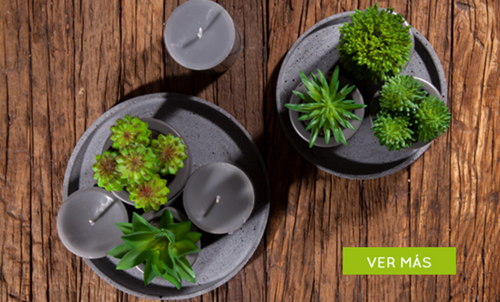

<div class="row">
    <div class="col-sm-12">
        
        <div class="row">
            <div class="col-xs-12">
                <h2 class="title-blog">ESPACIOS PARA DECORAR CON PLANTAS ARTIFICIALES</h2>
                <p class="text-justify">Muchas veces queremos ese toque natural en nuestro hogar, darle ese aire fresco y verde, pero hay algunos
                    factores que nos detiene, como el tiempo que se le debe dedicar a las plantas reales, o simplemente porque
                    nuestro hogar no posee las condiciones adecuadas para mantenerlas; para esto están las plantas artificiales,
                    que nos ayudan a darle ese ambiente natural sin un mayor cuidado.
                    <br>
                    <br>Para el uso de este tipo de decoración, debemos pensar en que espacios queremos transmitir una onda verde,
                    además de pensar el tamaño que deseamos usar, la forma y que tan coloridas deseas tus plantas.
                    <br>
                    <br>Podemos empezar con un rincón natural en nuestro lobby, o pasillo, donde al entrar a casa refleje la
                    frescura de la naturaleza, esto genera un aire de circulación mayor ya que los contrastes naturales generan
                    dinamismo en el espacio, además de dar esos toques de color que tanto hacen falta en nuestro hogar.
                    <br>
                    <br>Otro lugar que es una buena opción para ambientarlo con plantas artificiales, es nuestro comedor, ya
                    que es un lugar perfecto para jugar con ideas (centros de mesa, en mesas auxiliares) y así ponerle cierto
                    nivel de color y generar una buena experiencia al momento de compartir en este espacio, por ejemplo,
                    es muy interesante traer detalles vegetales en verde que den un nuevo aire a la decoración, el juego
                    con estas plantas va de acuerdo a tu personalidad y tus gustos.
                </p>
            </div>
        </div>
        <div class="row">
            <div class="col-sm-12">
                <a href="javascript:void(0)" [routerLink]="['/categoria']" [queryParams]="{ pageSize: '10000', group: '015', subgroup: '056', brand: '0009' }">
                    
                </a>
                <br>
                <br>
            </div>
        </div>
        <div class="row">
            <div class="col-xs-12">
                <p class="text-justify">En nuestra habitación va muy bien crear conexión con la vegetación, con detalles que reflejen un aire enriquecedor,
                    combinando tonos que vayan acordes con los elegidos para la decoración, y así crear una interacción adecuada
                    entre los elementos, por otra parte los toques naturales dan un aire relajante, perfecto para este espacio.
                    <br>
                    <br>Uno de los consejos más importante para introducir esta decoración en tus espacios, es tratar de que
                    las plantas artificiales se vean realistas, aquellas que se ven demasiado plásticas pierden credibilidad
                    y generan un peso visual poco recomendable, además se perderá ese ambiente natural que estamos buscando.
                    <br>
                    <br>Lo ideal es generar espacios donde se cree una línea visualmente interesante, jugando con elementos que
                    generen circulación en el ambiente y hagan de nuestros espacios, lugares para tener experiencias positivas,
                    en Matisses tenemos una amplia variedad de plantas artificiales que se adaptan a cada espacio de tu casa,
                    además de ofrecer una gran variedad de tonos, tamaños y colores que sabemos te van a encantar, y darán
                    ese toque natural que buscas sin mayor cuidado.
                </p>
            </div>
        </div>
    </div>
</div>